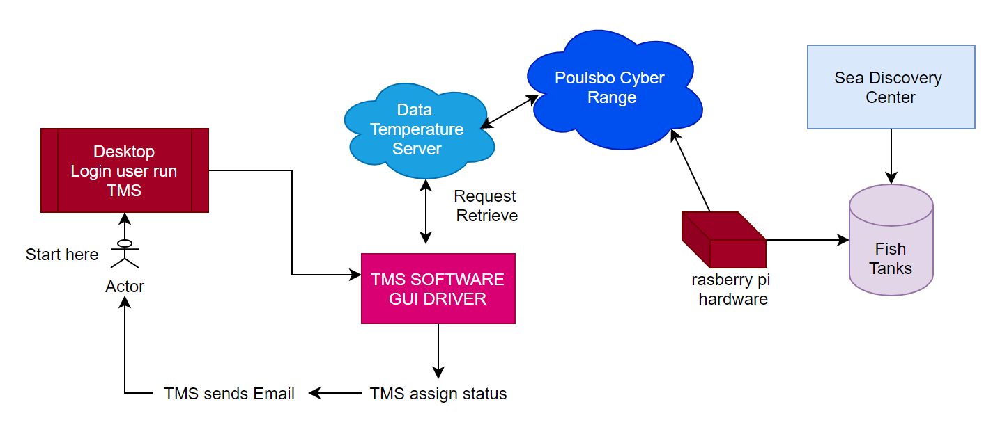
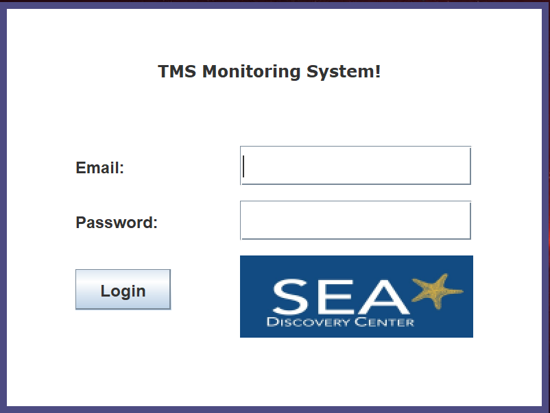
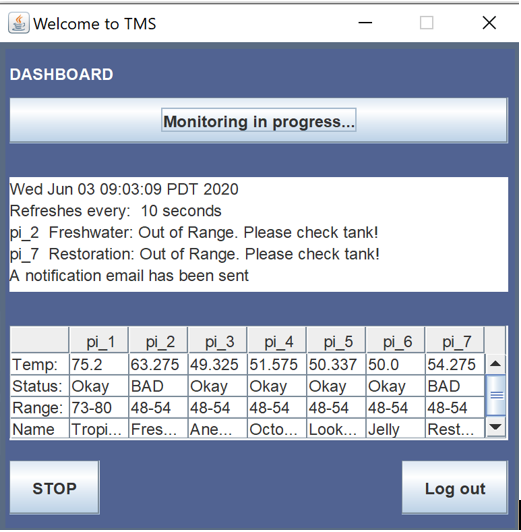
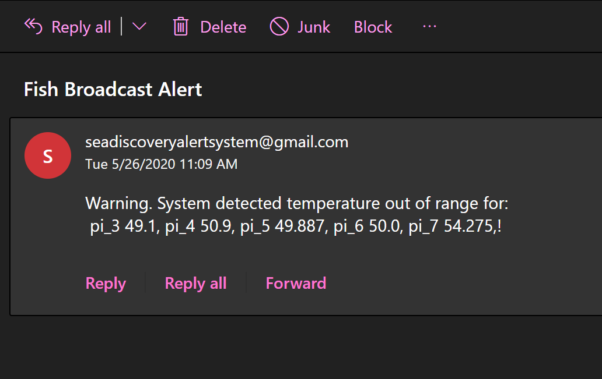

-
Task Monitoring System, TMS
- Broadcast Automated email that is sent directly to the personnel whose email address is registered to the system to notify about a critical reading detected or received during active monitoring process.
- Sound Alert An audible sound that is triggered when a critical status has been detected. This is directly experienced through the desktop application installed.
- Version Control: Gitlab
- IDE: intelliJ
- Languages: Java and Python
- Framework: MVC
- Libraries: Swing GUI toolkit, Javax Swing, smpt, beautiful soup
- Software Requirement Specification, SRS
- Usecases, UML, Sprint, Functional Testing, Integration Testing
Overview
Let me take you through our year long senior project adventure. First of all, I am thankful to have been grouped with two amazing students, Chris Miller and Archan Rupela who are the epitome of fun and reliability. This project which we call Task Management System or TMS was developed to support Sea Discovery Center public aquarium located in Poulsbo. The Sea Discovery Center is a public aquarium built to educate its community about marine life and its environment. Our mission as a group is to create a tool that would help the aquarium personnel maintain the water conditions in the tanks.Task
To create a monitoring system with a built-in alert notification manager.How does it work (high-level)
It starts from retrieving data from the pi sensors (hardware) that are hooked up in each tanks in the aquarium. Based on these data, we assign different status such as 'good', critical' or 'no data' according to its respective water tank conditions. Conditions are based on whether the water temperature is too hot or too cold for the type of fish that live in the tank. Once the system detects a temperature that is tagged as 'critical' the system must send an alert notification through email and a text message to the personnel at the Sea Discover to perform appropriate action and mostly save the fish from imminent death.

Main Features
Tools and Implementation
Just like cooking, we need to prepare the tools we will use to implement this software. Let me break down the implementation into three chunks: UI, framework, and back-end. First, we used Swing GUI toolkit to build each component in the UI, which include the login page and dashboard page. Consequently, we used MVC or Model-view-controller framework to allow separation of components coupled with OOP. We were able to independently work on each module that we assigned ourselves with allowing minimal effect on the overall program. Our teammate from Poulsbo, Josh, helped us set up a web server where we could scrape the pi-sensor data directly from the cyber range. A python script using beautiful soup library was used to pull the data from the server. Lastly, back-end integration started as soon as the data retrieval has been established and both features have been successfully implemented. A python script using smpt library is used for SMPT protocol to perform the emailing process. We developed the program in intelliJ utilizing JDK and its standard libraries.Output
Login

Status

Email
